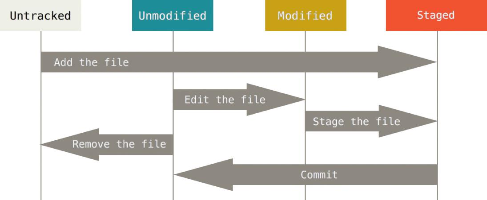

#Gulp watch works
##Git Essentials
###Git Term List
| Git Term | Description |
|---|---|
| Git SCM | Version Control System |
| Repository | Repo |
| Branch | Branch |
| Change Set | Set of changes |
##Git common commands used in various situations:
###start a working area git | workflow :---|:--- clone| Clone a repository into a new directory init | Create an empty Git repository or reinitialize an existing one
###work on the current change (see also: git help everyday)
| git | workflow |
|---|---|
| add | Add file contents to the index |
| mv | Move or rename a file, a directory, or a symlink |
| reset | Reset current HEAD to the specified state |
| rm | Remove files from the working tree and from the index |
###examine the history and state (see also: git help revisions)
| git | workflow |
|---|---|
bisect Use binary search to find the commit that introduced a bug grep Print lines matching a pattern log Show commit logs show Show various types of objects status Show the working tree status
###grow, mark and tweak your common history
| git | workflow |
|---|---|
| branch | List, create, or delete branches |
| checkout | Switch branches or restore working tree files |
| commit | Record changes to the repository |
| diff | Show changes between commits, commit and working tree, etc |
| merge | Join two or more development histories together |
| rebase | Forward-port local commits to the updated upstream head |
| tag | Create, list, delete or verify a tag object signed with GPG |
###collaborate (see also: git help workflows)
| git | workflow |
|---|---|
| fetch | Download objects and refs from another repository |
| pull | Fetch from and integrate with another repository or a local branch |
| push | Update remote refs along with associated objects |
###Git Workflow; git command | git workflow step -----------------|----------------------- git init |initializes a user directory for git version control (only once) git add remote git add .| adds all created or modified files to staging area git commit -m "message" | collects staged files into a changeset.
###Git init - starts the git workflow Create an empty Git repository or reinitialize an existing one
This command creates an empty Git repository. A subdirectory with the name .git directory is created. With this .git directory subdirectories for objects, refs/heads, refs/tags, and template files are created.
Running git init in an existing repository is safe. It will not overwrite things that are already there. The primary reason for rerunning git init is to pick up newly added templates (or to move the repository to another place if --separate-git-dir is given).
The Git directory is where Git stores the metadata and object database for your project. This is the most important part of Git, and it is what is copied when you clone a repository from another computer.
##The 3 Git Directories
###Working directory: \mydir initialized with git init The working directory is a single checkout of one version of the project. These files are pulled out of the compressed database in the Git directory and placed on disk for you to use or modify.
###Staging area: set of changes after git command: git add . The staging area is a file, generally contained in your Git directory, that stores information about what will go into your next commit. It’s sometimes referred to as the “index”, but it’s also common to refer to it as the staging area.
###Origin with the master: when se The basic Git workflow goes something like this:
###Git Stages 
###Git States
###Git Checkins

###Git Change sets